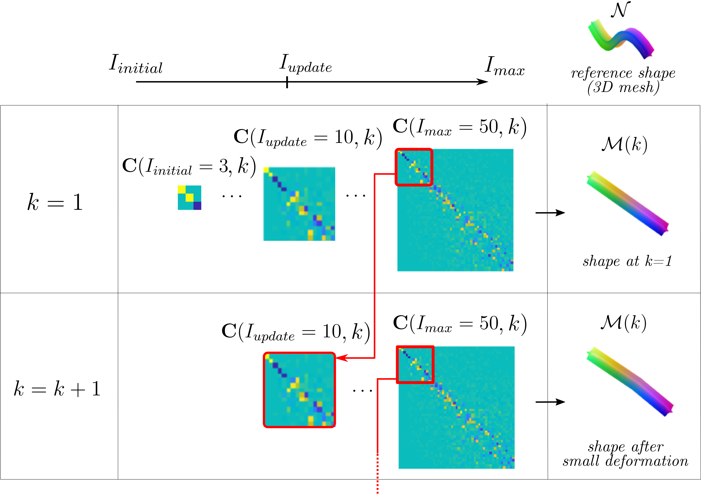
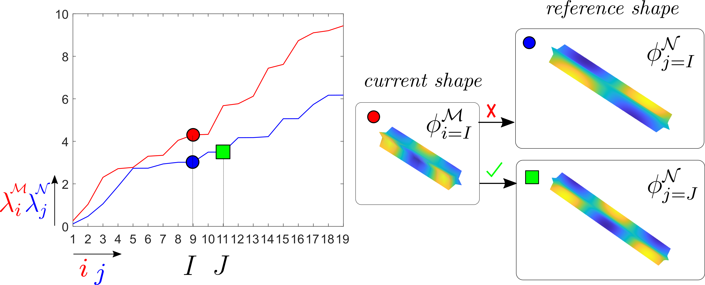
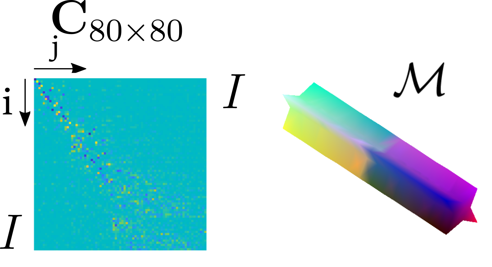
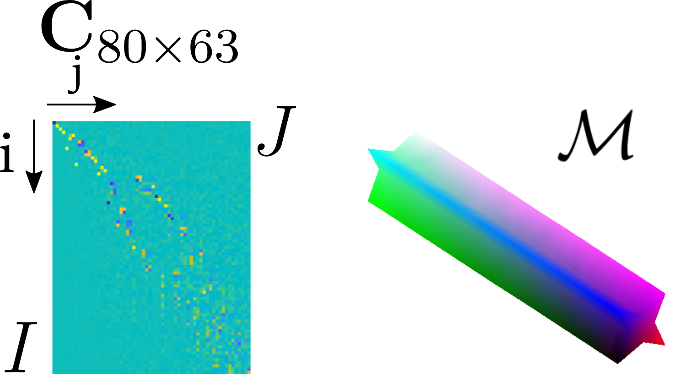
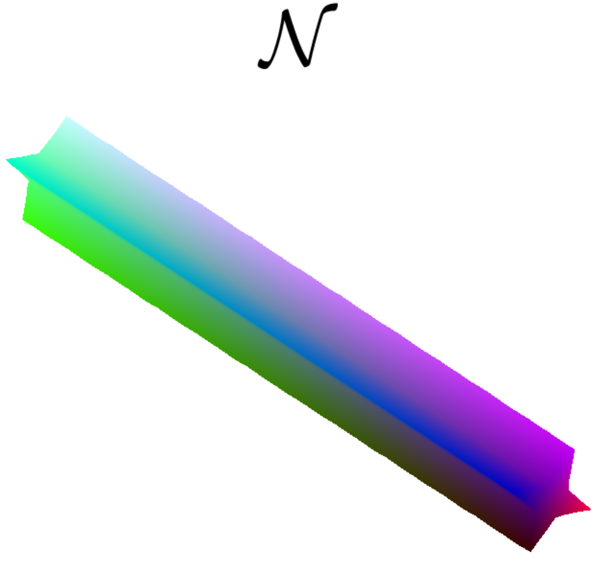

3 Time consistent and non-isometry robust surface mapping
So far, we discussed surface maps \(\Pi\) between two static shapes \(\mathcal{M}\) and \(\mathcal{N}\). Our goal now is to provide maps through time iterations \(k \in \mathbb{N}\) between an evolving current shape \(\mathcal{M}(k)\) and a target shape \(\mathcal{N}\). Such maps can then be used to deform \(\mathcal{M}(k)\) towards \(\mathcal{N}\) in a shape control strategy like the one introduced in sect. 4. For effective shape control, as the object deforms, we want functional maps \(\mathbf{C}(I_{max},k)\) and point-to-point maps \(\Pi(k)\) to evolve smoothly and thus be time consistent (note dependence on \(k\) has been introduced). We identified three conditions to achieve consistency and smooth map evolution in real-world applications with deformable objects: (i) Time consistency of basis \(\Phi^\mathcal{M}_{I_{max}}(k)\) (Section 3.2), (ii) Time consistency of functional maps \(\mathbf{C}(I_{max},k)\) (Section 3.3), and (iii) Robustness to non-isometries (Section 3.4). To address these challenges, we propose a solution developed in the following sections and embodied in a compact and practical form in Algorithm 1. Our proposed solution yields a time-consistent surface map \(\Pi(k)\) that, when applied to a set of points \(\mathbf{Y} \in \mathbb{R}^{N \times 3}\) from the target shape \(\mathcal{N}\), generates the set of points \(\Pi(k)\mathbf{Y}\in \mathbb{R}^{M \times 3}\) that are mapped to points \(\mathbf{X} \in \mathbb{R}^{M \times 3}\) from the current shape \(\mathcal{M}\). These point maps can be incorporated into a shape control scheme, as explained in Section 4.
3.1 Initialization of $\mathbf{C}(I,k=1)$
As previously stated, certain shape characteristics, such as symmetries, may result in numerous solutions for functional maps \(\mathbf{C}(I,k)\) that present similar minima. We now tackle the problem of defining an initial solution that is appropriate for a shape control application. One may arbitrarily define an initial solution \(\mathbf{C}(I,k=1)=\mathbf{I}_{I\times I}\), like ZoomOut does. However, this initialization is not appropriate for shape control given two main reasons:
1) Functional maps do not straightforwardly differentiate between surface orientations and inversions. An initialization \(\mathbf{C}(I,k=1)=\mathbf{I}_{I\times I}\) may result in a solution that requires inverting object surface, thus leading to the infeasibility of the control task and to object collapse. Methods in the functional map literature such as (Ren et al., 2018) can deal with this limitation as they also consider the surface orientation through its normals.
2) Even when considering surface orientation, two mapping solutions that share similar minima might lead to very different control action requirements (e.g., unnecessarily rotating a symmetric object 180º around its symmetry axis). It is desirable to obtain the mapping solution that leads to the least Euclidean distance error. Methods such as (Eisenberger et al., 2020) consider extrinsic error in their initialization, thus achieving more desirable solutions for our particular application of shape control.
Initialization is not required to be as fast as in-loop processes, and a more time-costly method such as (Ren et al., 2018) or (Eisenberger et al., 2020) can be applied to achieve an initial solution that can be later updated using our proposed method. However, seeking a more straightforward approach, in this paper we opted for an ICP (Iterative Closest Point) and closest neighbour based initialization of \(\mathbf{C}(I_{initial},k=1)\). We conduct an ICP optimisation between the two sets of point coordinates \(\mathbf{Y}\in\mathbb{R}^{N\times 3}\) (which stacks the node positions of the target mesh) and \(\mathbf{X}\), thus obtaining a rigidly aligned set of point coordinates \(\mathbf{X}_{\mathrm{ICP}}\in\mathbb{R}^{M\times 3}\). A closest neighbour search between \(\mathbf{X}_{\mathrm{ICP}}\) and \(\mathbf{Y}\) provides us with a point-to-point map \(\Pi(k)\) that allows to compute our initial functional map solution: \[ \textbf{C}(I_{initial},k=1)=(\Phi^{\mathcal{M}}_{I_{initial}}(k))^\intercal\mathbf{A}^{\mathcal{M}}(k)\Pi(k)\Phi^{\mathcal{N}}_J, \tag{10} \]
where the considered amount of eigenvectors \(J\) in \(\Phi^{\mathcal{N}}_J(k)\) is responsible for the robustness to non-isometries. The computation of \(J\) will be further explained in Section 3.4.
3.2 Time consistency of basis $\Phi^{\mathcal{M}}_{I_{max}}$ and object point tracking
The time consistency of the basis \(\Phi^\mathcal{M}_{I_{max}}(k)\) is a necessary (but not sufficient) condition for the consistency of functional maps \(\mathbf{C}(I_{max},k)\) and point-to-point maps \(\Pi(k)\) across iterations. Consider \(\Phi^\mathcal{M}_{I_{max}}(k=1)\) our reference basis. Computing new bases across iterations \(k>1\) using newly retrieved object points \(\mathbf{X}_{\mathrm{ret}}(k)\in \mathbb{R}^{M_{\mathrm{ret}}(k)\times 3}\) (\(M_{ret}(k)\) varies with time and is not necessarily equal to \(M\)) results in two main issues:
- ıtem Each row in basis \(\Phi^\mathcal{M}_{I_{max}}(k)\) corresponds directly to a specific point on the object's surface. However, variations occur between iterations due to factors like object movement, deformation, camera noise, and irregular sampling patterns. These variations affect the number of retrieved points (\(M_{\mathrm{ret}}(k)\neq M\)), their 3D positions, and their associated row indexes, causing an inconsistency in the row-to-point correspondence of \(\Phi^\mathcal{M}_{I_{max}}(k)\) across iterations. Maintaining this consistency is essential, whether for tracking object points (e.g., for computing a deformation Jacobian) or for properly updating functional maps \(\mathbf{C}(I_{max},k)\) across iterations. ıtem Furthermore, properly updating \(\Phi^\mathcal{M}_{I_{max}}(k)\) would require analysing the sign of the eigenvectors that comprise the basis, as the signs of the eigenvectors are arbitrarily defined and can change among time iterations \(k\).
Our approach serves a dual purpose. First, it solves the time inconsistency of the basis \(\Phi^\mathcal{M}_{I_{max}}(k)\) by ensuring a consistent correspondence between rows of \(\Phi^\mathcal{M}_{I_{max}}(k)\) and points on the object's surface. Second, it provides a time consistent vector \(\mathbf{X}(k)\in \mathbb{R}^{M\times3}\), which tracks the movement of the same set of object points (from the initial instant) over time. Through the use of \(\mathbf{X}(k)\) it becomes possible to compute the deformation Jacobian of the object and to define an error vector that remains time-consistent for shape control purposes (the control system will be explained in more detail in Section 4).
We first introduce matrix \(\Pi^\mathcal{M}(k)\in\mathbb{R}^{M\times M_{\mathrm{ret}}(k)}\) which, in the fashion of \(\Pi(k)\), constitutes the point-map between newly retrieved points \(\mathbf{X}_{\mathrm{ret}}\in \mathbb{R}^{M_{\mathrm{ret}}(k)\times3}\) and the time-consistent tracked points from the previous iteration \(\mathbf{X}(k-1)\). In each iteration \(k>1\), \(\Pi^\mathcal{M}(k)\) is initialised through a closest neighbour search between point positions stacked in \({\mathbf{X}}_{\mathrm{ret}}(k)\) and \({\mathbf{X}}(k-1)\in \mathbb{R}^{M\times3}\). This initialization facilitates the convergence of the next iterative process towards an embedding-coherent mapping solution in which the object moves and deforms continuously in space. The already initialised map \(\Pi^\mathcal{M}(k)\) is updated and refined in a coarse-to-fine manner for increasing values of \(I\), that is for \(I=I_{update},\dots,I_{max}-1\) we iteratively compute:
\[ \Pi^\mathcal{M}(k)\mkern-4mu = \\ =\mkern-4mu \smash[b]{\mathop{\arg \min}_{\Pi^\mathcal{M}(k)}}\mkern-4mu \left\| \Pi^\mathcal{M}(k) \Phi^{\mathcal{M}}_{\mathrm{ret},I}(k)(\textbf{C}^\mathcal{M}(I,k))^{\intercal} - \Phi^{\mathcal{M}}_{I}(k\mkern-4mu-\mkern-4mu1) \right\|^2_{F}\mkern-4mu. \tag{11} \]
\[ \mathbf{C}^\mathcal{M}(I+1,k)=(\Phi^{\mathcal{M}}_{I+1}(k\mkern-4mu-\mkern-4mu1))^\intercal\mathbf{A}_{}^{\mathcal{M}}(k\mkern-4mu-\mkern-4mu1)\Pi^\mathcal{M}(k)\Phi^{\mathcal{M}}_{\mathrm{ret},I+1}(k), \tag{12} \] being \(\Phi^{\mathcal{M}}_{\mathrm{ret},I}(k)\in\mathbb{R}^{M_{\mathrm{ret}}\times I}\), \(\Phi^{\mathcal{M}}_{\mathrm{ret},I+1}(k)\in\mathbb{R}^{M_{\mathrm{ret}}\times I+1}\) in (11) and (12) the basis obtained from the newly retrieved set of object points truncated to the \(I\)-th and (\(I+1\))-th eigenvector respectively.
Functional map \(\mathbf{C}^\mathcal{M}\) in (12) (with elements \(c^\mathcal{M}_{i,j}(k)\)) maps the previous state (time consistent) basis \(\Phi^\mathcal{M}_{I_{max}}(k-1)\) and the obtained basis from the newly retrieved set of points \(\Phi^\mathcal{M}_{\mathrm{ret},I_{max}}(k)\). Using \(\mathbf{C}^\mathcal{M}\), the diagonal matrix \(\mathbf{C}^\mathcal{M}_{\mathrm{sgn}}(k)\in\mathbb{R}^{I_{max}\times I_{max}}\) is computed:
\[ \mathbf{C}^\mathcal{M}_{\mathrm{sgn}}(k)=\text{blkdiag}(\{\text{sgn}(c^\mathcal{M}_{i,i}(k))\}^{I_{max}}_{i=1}), \tag{13} \]
being \(\text{sgn}()\) the sign operator and \(\text{blkdiag}()\) the block diagonal matrix building operator. Matrix \(\mathbf{C}^\mathcal{M}_{\mathrm{sgn}}(k)\) contains the sign correction that should be applied to eigenvectors in \(\Phi^\mathcal{M}_{\mathrm{ret},I_{max}}(k)\) in order to be sign-consistent with the previous state basis. Note that map \(\Pi^\mathcal{M}(k)\) contains the point mapping that allows to pick and re-order the rows of \(\Phi^\mathcal{M}_{\mathrm{ret},I_{max}}(k)\) so that they are consistent with the rows of \(\Phi^\mathcal{M}_{I_{max}}(k-1)\) in the sense of both representing the same set of tracked object points. Combining the row re-ordering provided by map \(\Pi^\mathcal{M}(k)\) from (11) and the sign correction provided by \(\mathbf{C}^\mathcal{M}_{\mathrm{sgn}}(k)\) from (13) we compute a time consistent basis:
\[ \Phi^{\mathcal{M}}_{I_{max}}(k)=\Pi^\mathcal{M}(k)\Phi^{\mathcal{M}}_{\mathrm{ret},I_{max}}(k)\mathbf{C}^\mathcal{M}_{\mathrm{sgn}}(k). \tag{14} \]
Then, also using \(\Pi^\mathcal{M}(k)\) from (11), the positions of the object tracked points \(\mathbf{X}(k)\) can be updated as
\[ \mathbf{X}(k)=\Pi^\mathcal{M}(k)\mathbf{X}_{\mathrm{ret}}(k). \tag{15} \]
3.3 Time consistency of functional maps $\mathbf{C}(I_{max},k)$
Even if time consistency of the basis \(\Phi^\mathcal{M}_{I_{max}}(k)\) is achieved, when shapes undergo deformations or present symmetries, new or multiple similar minima might arise in the computation of \(\mathbf{C}(I_{max},k)\). This can lead to significantly different functional map solutions \(\mathbf{C}(I_{max},k)\) across iterations that, in turn, lead to time inconsistent point-to-point maps \(\Pi(k)\). For this reason, our method needs to ensure time consistency of functional maps \(\mathbf{C}(I_{max},k)\). To address this problem, our method exploits the fact that slow/smooth deformations do not largely affect geometry features presented at low frequencies. We propose taking advantage of sub-matrices from previously computed functional maps \(\textbf{C}(I_{max},k-1)\) under the assumption that \(\Phi^{\mathcal{M}}_I(k) \approx \Phi^{\mathcal{M}}_I(k-1)\) for low \(I=I_{update}\). That is, We initialise the functional map \(\mathbf{C}(I_{update},k)\) of iteration \(k>1\) with a matrix equal to the top-left \(I_{update} \times I_{update}\) sub-matrix of \(\textbf{C}(I_{max},k-1)\) (see Fig. 4). Thus, elements of \(\mathbf{C}(I_{update},k)\) are:
\[ c_{i,j}(I_{update},k)=c_{i,j}(I_{max},k-1), \, \text{for} \; i,j=1,\dots,I_{update}. \]
This process not only allows updating the matching in a time-consistent manner (i.e. with time continuity), but also reduces the computational cost in iterations \(k>1\) as the number of optimisations is reduced by \(I_{update}-I_{initial}\). Using our time-consistent basis \(\Phi^{\mathcal{M}}_{I_{max}}(k)\) from (14) (recall \(\Phi^{\mathcal{M}}_{I}(k)\) is \(\Phi^{\mathcal{M}}_{I_{max}}(k)\) truncated to the \(I\)-th column), we can iterate through increasing values of \(I=I_{update},...,I_{max}-1\) to refine point-to-point maps \(\Pi(k)\) and functional maps \(\textbf{C}(I,k)\): \[ \Pi(k)= \\ \begin{matrix} \\ \arg \text{min} \\ \Pi(k) \end{matrix} \left \| \Pi(k) \Phi^{\mathcal{N}}_J\textbf{C}^\intercal(I,k)-\Phi^{\mathcal{M}}_I(k) \right \|^2_{F}, \tag{16} \] \[ \textbf{C}(I+1,k)=(\Phi^{\mathcal{M}}_{I+1}(k))^\intercal\mathbf{A}^{\mathcal{M}}(k)\Pi(k)\Phi^{\mathcal{N}}_J. \tag{17} \]
Note that, even though we re-use data from the previous \(\textbf{C}(I_{max},k-1)\) to initialise our functional map estimation in iteration \(k\), in (17) we allow those elements of \(\textbf{C}(I_{update},k)\) that map low frequencies (i.e. \(c_{i,j}(I,k)\) with \(i,j\leq I_{update}\)) to be updated as well. Regarding the value of \(J\) in (16) and (17), the classic refining method in (Melzi et al., 2019) would be equivalent to setting \(J=I\). That is, truncating the current and target shape basis to the same number of columns (see how (8)-(9) do not require defining \(J\)). However, in the following section, we propose defining \(J\) to increase the robustness of the method to non-isometries.

3.4 Robustness to non-isometries
A challenge of real setups is that there is no guarantee that the desired target shape constitutes an isometry of the current shape. Our method improves robustness against non-isometries, thus achieving adequate performance in real applications.
We will now develop on the computation of \(J\) in (16) and (17) to increase robustness to non-isometric deformations. In (Rodolà et al., 2017), a method for matching an incomplete surface (i.e. a shape with missing parts) to its full version (i.e. the complete shape) was presented. This problem is referred to as partial functional correspondence. It is solved by taking advantage of the fact that the basis of the incomplete shape generates a subset of the basis of the complete shape. This leads to a non-square functional map \(\textbf{C}\) that presents a dominant slanted diagonal. This diagonal's slope is proportional to the ratio of the shapes' areas \(A(\mathcal{N})/A(\mathcal{M})\), being \(\mathcal{N}\) the complete shape and \(\mathcal{M}\) the incomplete shape.
In (Melzi et al., 2019), in order to solve the partial correspondence problem, they propose an update rule of the basis' size (i.e. an update rule for \(I\) and \(J\)) that weakly enforces \(\textbf{C}\in \mathbb{R}^{I\times J}\) to be non-square and to present a slanted diagonal with a slope proportional to \(A(\mathcal{N})/A(\mathcal{M})\). One intuition behind the slanted diagonal slope is that the lower frequencies of the incomplete shape begin to appear later (in higher harmonic indexes) of the complete shape's spectrum, and thus the slanted diagonal compensates for that.
Our method exploits the slanted-diagonal concept from a different perspective. The fact that the objects we want to control deform isotropically implies that non-isometric deformations mainly affect the object's geometry in a narrow bandwidth of low frequency features. That is, if the object stretches, it will do it uniformly and surface details will be dragged along in a quasi-isometric manner. For this reason, we compensate for the frequency miss-match by enforcing a slanted diagonal with a slope
\[ \rho(k)=\sqrt{A(\mathcal{M}(k))/A(\mathcal{N})}. \tag{18} \]
Note \(\rho\) in (18) is inversely proportional to the square root of the slope of the partial correspondence problem in (Rodolà et al., 2017) and (Melzi et al., 2019)). We enforce the slope \(\rho\) in our functional map solution by setting \(J\) of \(\lambda^\mathcal{N}_J\) to: \[ J=\begin{matrix} \\ \text{max} \\ r \end{matrix}\left\{r \mid \lambda^{\mathcal{N}}_r \leq \lambda^{\mathcal{M}}_I(k) \rho(k)\right\}, \tag{19} \] where \(\lambda^{\mathcal{N}}_J\), and respectively \(\lambda^{\mathcal{M}}_I\), are the eigenvalues associated to eigenvectors in columns \(I\) and \(J\) of the bases. Update of \(J\) (19) takes place between (16) and (17) and for the first computation of (16) is initialized as \(J=I_{update}\). The intuition behind our update rule is that lower frequency components (i.e. components associated to low eigenvalues \(\lambda^{\mathcal{M}}_i\)) are inversely proportional to their periods \(t^{\mathcal{M}}_i\) and therefore \(\lambda^{\mathcal{N}}_j/\lambda^{\mathcal{M}}_i=t^{\mathcal{M}}_i/t^{\mathcal{N}}_j\). We approximate the objects' period ratio \(t^{\mathcal{M}}_i/t^{\mathcal{N}}_j\) with the square root of the objects' area ratio \(\rho\) (18) (Fig. 5). Introducing (19) in Algorithm 1 we enhance the retrieval of point-to-point matches in non-isometric deformation scenarios and, in some cases, (19) can become a critical element in the success of the method (see Fig. 6). Note that (19) is not applied in the iterative refinement process (11)-(12). This is because our method assumes a smooth deformation process, allowing the shapes of consecutive object states to be safely considered as isometries.


(Zoomout (Melzi et al., 2019))

(Ours (Sect.3.4))

(Target shape)